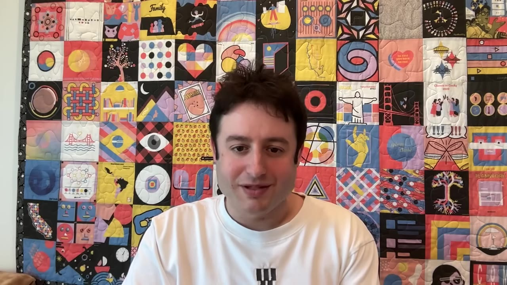
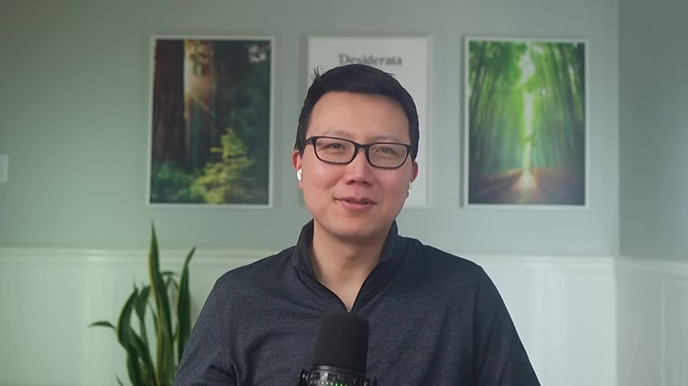
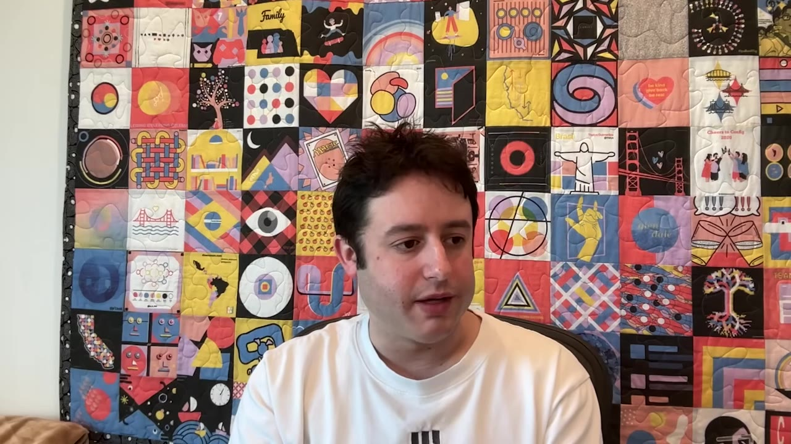
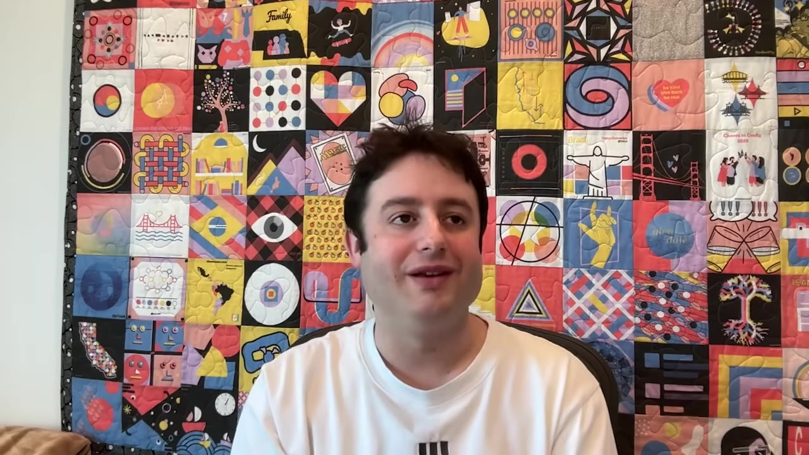
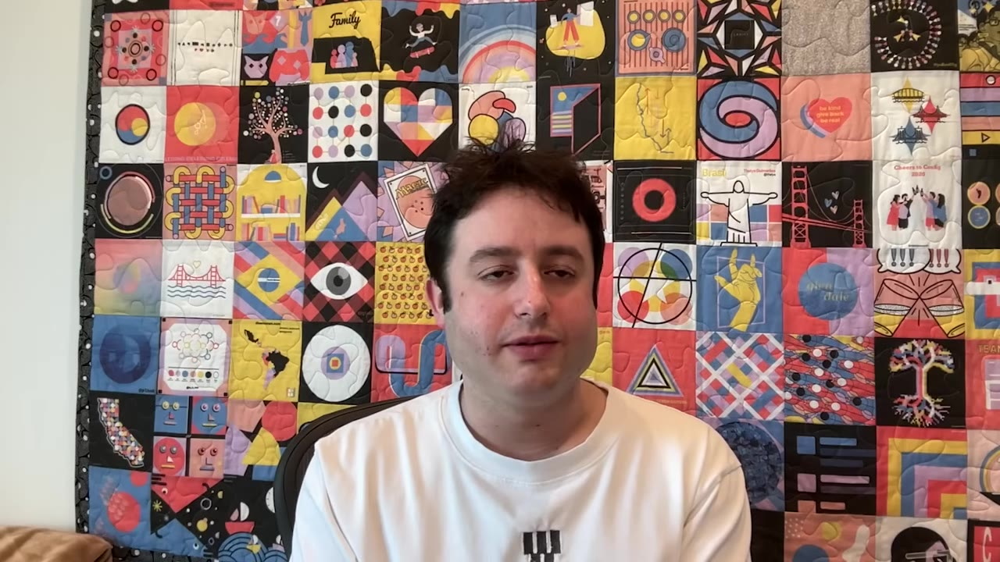
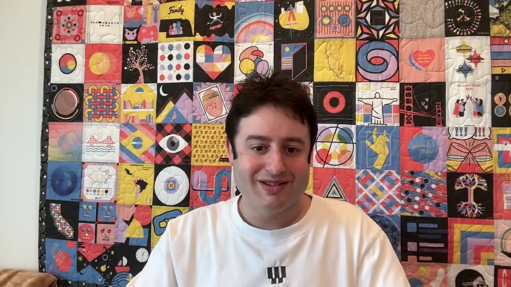
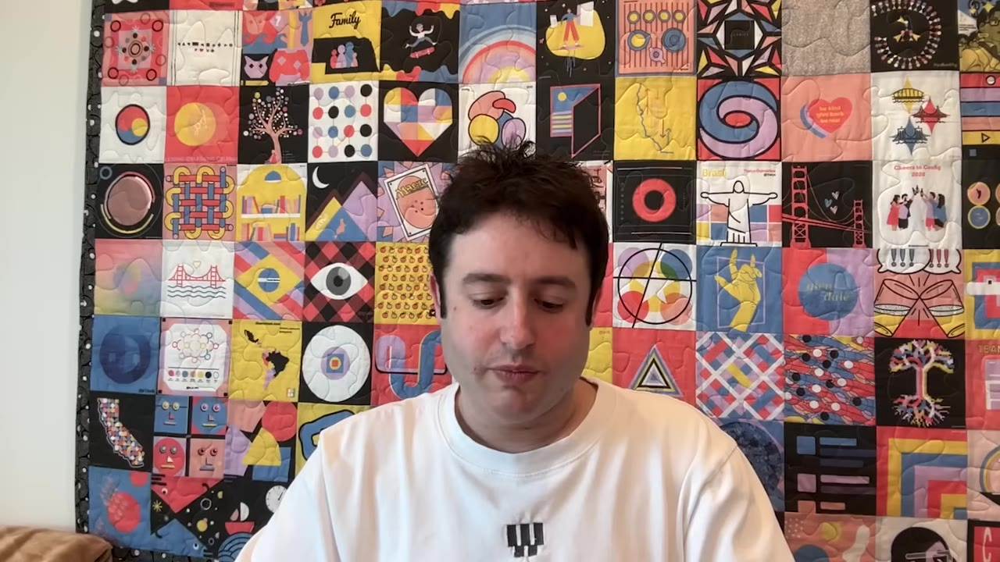
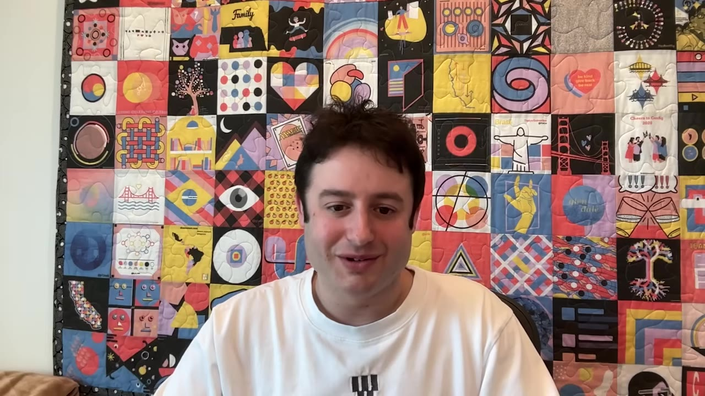

Figma's CEO on Getting Good at Design in the AI Era
Dylan Field separates three things AI hype keeps fusing — taste, craft, and point of view — then walks through what changes when code is nearly free: the output of a prompt is a starting point, not an answer; idea-to-product stopped being a line; and "design is the new code.
Creator: Peter YangRuntime: 41 minVideo published: April 12, 20268.5K views when summarized
Three things people conflate under 'taste': taste is navigating the possibilities and having preferences clear enough to articulate; craft is pushing past where others stop and making every level of abstraction fit; point of view is expressing something unique — and if everyone agrees with it, it isn't much of one.
Models can light up the possibility space, but the output of a prompt is not a final result. You take that first prompt and mold it like clay, with intent. Direct manipulation beats code editing, which beats prompting — and you're the judge of what's worth exploring.
Idea→product is no longer linear stages but hops you can make from any point to any other — stacked diamonds of divergence and convergence. 'It's never done,' which is the luxury of bits over atoms.
Roughly 60% of designs in Figma are now made by non-designers. Research, support, and sales ship working prototypes, not reports, and PMs get to make things. But keep talking to customers, and don't be the rate limiter on the team.
Where it's headed: 'design is the new code' — a pull request to production straight from Figma, value moving up the stack to the blueprint — a merging of responsibilities rather than roles, and a visual renaissance now that exploring is cheap.
01 · Taste, craft, point of view
Three different things
Silicon Valley is excited about "taste," but to Dylan it's three distinct things, and you can have one without the others. Taste is navigating the possibilities and having preferences clear enough that you can articulate them — and help others see what you're going for and what you're not. Craft is pushing past where others might stop, making every level of abstraction, micro to macro, fit together. Point of view is expressing something unique you see in the world, bringing a take to life that moves a conversation forward.

Dylan Field on the distinction — taste, craft, and point of view can exist independently of each other.00:01:40
If everyone agrees to your point of view, you're probably not having much of a point of view.— Dylan Field
Listening to users gets you to local maxima, he says; point of view is what gets you to the next one — or the first.
02 · Can AI learn taste?
The possibility space
Models have already gotten incredible at visual output — Dylan points to Gemini 3.x: complex prompt, references it understands, push it hard enough, and you get something pretty striking. But he never came away from it feeling "great, got my answer, one shot, done." The output lights up the possibility space; it doesn't hand you the result.

He had more opinions about the output that already had a point of view than about the "average output" — what Peter calls purple slop. Once you put some intent behind it, the dynamic loop starts and you want to push it further yourself. And prompting isn't always the way; often you have to move it forward as a human to iterate to the right place.00:07:30
03 · Idea → product
It's not a line anymore
What used to be linear stages — ideation, alignment, design, production — is now hops. You can start anywhere, including from an app you already have, but you'll want to go everywhere. Dylan doesn't even call it a loop, because you're not always returning to the same thing: it's stacked diamonds of divergence and convergence, from any point to any other.

"It's never done" — the luxury of bits over atoms; you get to keep updating instead of shipping it off and living with it. Keep the velocity, but with cardinality: run, and run toward the right thing, not in circles.00:10:30
04 · Code ↔ canvas
Why the round trip matters
People asked why Figma shipped code→canvas, not just canvas→code. Dylan's answer: you might start in code to get a prototype you can play with, but for spacing, color, and the properties you directly manipulate, the rapid feedback loop on the canvas wins.

His ordering: code editing is superior to prompting, and direct manipulation on the canvas is superior to code editing when you're adjusting things like that. The infinite canvas also lets you see all the possible flows and iterations in one spot. The job is to make the design↔code round trip as high-quality and tight as possible, no matter where you start.00:13:30
05 · You're the judge
A prompt is clay, not an answer
On the prompt-to-design tools and "swarm of agents" demos — impressive, but it's a mistake to treat the output of a prompt as a final result.

Agents can paint the possibility space — visual styles, different IA, different flows — but you're the judge of the system, the one deciding what's good and worth exploring, because the possibilities are nearly infinite. Like media generation, the first prompt is clay you mold and shape: diverge, cut branches off the tree, refine. The "put in a prompt and I'll build the whole stack" approach never gets it right in one shot, and the unnecessary code makes it more work to fix.00:16:00
06 · Everyone's a builder
PMs get to make things
Something like 60% of designs in Figma are now created by non-designers. Dylan sees the research team ship functioning prototypes — five of them — instead of a report; support builds internal tools; sales gets familiar with how to build. And PMs who thought the job was documents and slide decks for upward review get to make things too.

"People need to see that leaders in their organization are making things, too — that's what inspires and creates inflection."00:22:30
07 · Talk to customers
Don't be the bottleneck
The push is outward: always be talking with customers, and don't let one person be the bottleneck — the "20 rounds of internal review before Dylan sees it" trap. He should see the changes that affect a lot of users, where his context helps; the rest shouldn't wait on him. When you put a block in the cycle, the team stops learning.

Two hacks to maximize learning: make lots of prototypes when you're unsure of the direction, and put five ideas in front of customers at once — showing five means no one thinks you're committed forever to one, so you get honest feedback fast.00:24:30
08 · Design is the new code
Toward a renaissance
Where Dylan thinks it's headed: design is the new code. You'll design in a visual-first way and do a pull request to production straight from Figma. It won't be everyone's method and the PR still gets reviewed, but there's no reason the value can't move up the stack — influencing a complex system from the blueprint rather than the very detailed specification that is code.

For a decade he expected a merging of roles; what he's seeing now is a merging of responsibilities — more people wearing lots of hats while still specializing, because an expert UX writer's craft is genuinely hard to replicate. AI is the starting point you push past with craft and intention. His real hope: a renaissance. The design industry has been in an aesthetic rut, and now that exploring is cheap and the technical barrier has dropped, more people can push toward something more visually interesting.00:39:00